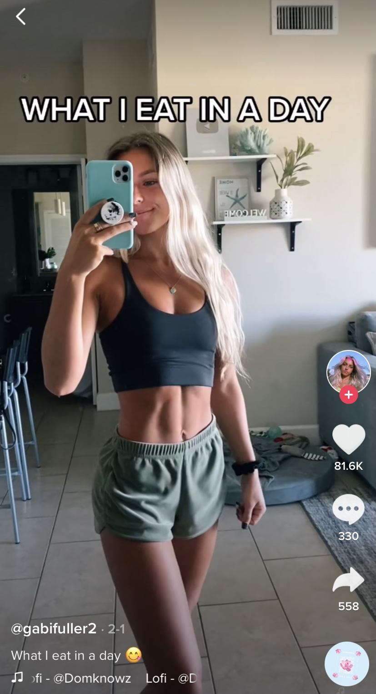
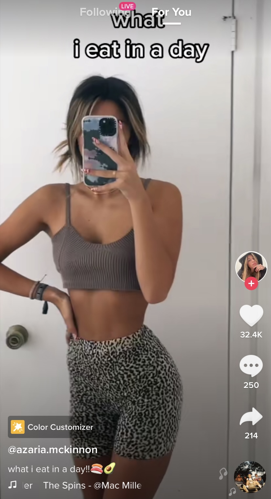

Social media has a huge impact on body image. The newest and widely popular app, TikTok, has influenced the health and well-being of many of its users. Sure, there are influencers that promote healthy lifestyles with protein packed meals and exercise regimens to gain muscle and not just lose weight. But, a lot of popular women on TikTok participate in the new phenomenon of “What I Eeat in a Dday” videos, which have inadvertently encouraged their followers to think their three meals a day should be a granola bar, salad, and well… another salad.
*I’m not personally attacking the women I chose as examples-- I am sure they have zero intention to harm their viewers. However, these videos in general and how they promote their under nourished bodies shows the issue behind these “What I Eat in a Day” videos.
Due to COVID-19, people are spending more time on their phones and especially on Tik Tok. According to Business Insider, Tik Tok has more than 2.3 billion downloads with 100 million of those being in the United States. In addition, Wallaroo Media, a marketing agency, estimated that Tik Tok will grow to more than 1.1 billion users as of February 2021; we are now in March and this number has more than doubled. Conclusively, this video-sharing social media app has gone viral and is popular around the world.

Over this past winter break, I got into a cycle of hyperfocusing on my looks and I do think these videos played a big role in causing that. I felt like if I didn’t workout everyday I would gain weight and I watched what I ate a lot more than I used to. Seeing what a “perfect” model, or anyone with body privilege, eats in a day starts to convince users that if they eat like them, they’ll look like them. Even worse, it instills a mind set of comparison which leads to negative self-talk.
The deadly side of comparison is present now more than ever with the increase of importance of social media in young adults' lives. Prior to Instagram and TikTok, “healthy-living” influencers reached their audience through blog posts and websites. In order to be a successful blogger, you have to publish several blog posts a day and it takes longer to reach a large audience. The possibilities of Instagram heighten that outreach-- and TikTok skyrockets it. The unique part of TikTok is that anyone can go viral for no apparent reason, unlike blogging and Instagram which take more work to build a bigger audience. The problem with this is that there is a lack of control over the content you see each day. On Instagram, if you follow an influencer whose niche is health, you are aware of the information you are exposing yourself to and you have the choice to unfollow them if you don’t wish to see their posts anymore. However, on Tiktok, you can say you’re “not interested” in a post, but there’s a much greater chance of seeing that same kind of content again and get negatively affected by it. The repetition of this promotion of unhealthy eating habits is why the problem snowballs and affects a vulnerable audience of self-assessing young adults.

As a 19 year old female on TikTok, I enjoy watching health-oriented material,so these “What I Eat in a Day” videos are constantly on my FYP, otherwise known as a foryoupage. The foryoupage is personalized for each user based on what you interact with the most-- whether that be liking, commenting, sharing, or watching the whole video. It gives you the most accurate stream of videos that you would be interested in. Health experts have been condemning these posts for causing disordered eating and unhealthy comparison to other people's lifestyles. I saw first-hand how this happens. I lost confidence. I saw friends develop body dysmorphia and engage in disordered eating. The topic of ‘What I Eat In a Day’ videos kept coming up in our conversations.
On the other hand, there are influencers using their platform to help others who struggle with eating disorders or who want to help their followers eat normally and not restrictively. For example, videos titled “Let’s Eat Together” have emerged wherein the creator pretends to eat with the viewer and prompts them to take a bite of their food. Many viewers struggling with eating disorders have even “dueted” these videos and their reaction is very powerful.
Personally, I wish that there would be more influencers focused strictly on fitness. Eating is a huge part of health, but it’s a very fragile topic and should be between a person and their healthcare provider. Social media has normalized trusting strangers' eating habits, who may not even have credentials, and implementing them into their own daily lives, without taking into account their body’s unique needs. On the other hand, exercise is both beneficial for the body and the mind. Exercise has many mental health benefits. When exercising, the body releases endorphins and serotonin that improve mood. It can also release stress and help improve your sleep. To me, seeing a workout video on TikTok inspires me to get up and get moving. “What I Eat in a Day” videos only cause me to compare myself to the creator and go inward.
Health isn’t just about putting good food in your body or doing a killer workout-- it’s about everything that you “put” into yourself. For me, happiness is key to health and doing anything that takes me out of myself-- whether that is doing an activity to get out of my own head, like taking a walk or watching the sunset, or doing something to help others--does the trick. Throughout the past year I have been sporadically working on an Instagram page, other than my personal account, that captures these moments and promotes confidence and self love. My most recent posts have been about my experience while on Accutane for acne. It’s been beneficial for me because it feels good to help others going through the same thing. For those not struggling with acne, the posts build others’ confidence by sharing vulnerabilities, conveying the message that nobody’s life is perfect and everyone has their own inner struggles. My “motto” behind my page is that our flaws are what makes each of us beautiful, interesting, and unique. I’ve even had some of my followers reach out to me through Instagram Direct Message to ask me about my experience, which is the most rewarding part of my page.
I decided to make my own version of the “What I Eat in a Day” TikTok... with a twist. I decided to film all the little moments throughout my day that make me the happiest and give me fulfillment. It made me appreciate the little things in life like watching the sunset or walking through the snow.
Watch my Tiktok Video here!